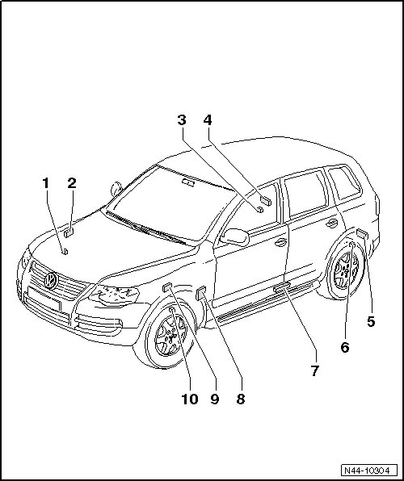

Tire Pressure Monitoring System, Generation 2
Tire Pressure Monitoring System Component Overview

1 Right front tire pressure monitoring sensor (G223)
• Removing and installing, refer to --> [ Tire Pressure Sensor ] Tire Pressure Sensor.
2 Right front tire pressure monitoring transmitter (in wheel housing) (G432)
• Removing and installing, refer to --> [ Right Front Tire Pressure Monitoring Transmitter ] Right Front Tire Pressure Monitoring Transmitter.
3 Right rear tire pressure monitoring sensor (G225)
• Removing and installing, refer to --> [ Tire Pressure Sensor ] Tire Pressure Sensor.
4 Right rear tire pressure monitoring transmitter (in wheel housing) (G434)
• Removing and installing, refer to --> [ Right Rear Tire Pressure Monitoring Transmitter ] Right Rear Tire Pressure Monitoring Transmitter.
5 Left rear tire pressure monitoring transmitter (in wheel housing) (G433)
• Removing and installing, refer to --> [ Left Rear Tire Pressure Monitoring Transmitter ] Left Rear Tire Pressure Monitoring Transmitter.
6 Left rear tire pressure monitoring sensor (G224)
• Removing and installing, refer to --> [ Tire Pressure Sensor ] Tire Pressure Sensor.
7 Tire pressure monitoring antennas (R207)
• Removing and installing, refer to --> [ Tire Pressure Monitoring Antenna ] Tire Pressure Monitoring Antenna.
• Component location: bolted to the left sill under the B-pillar.
8 Tire pressure monitoring control module (J502)
• Removing and installing, refer to --> [ Tire Pressure Monitoring Control Module ] Service and Repair.
• Component location: On mounting bracket for parking brake pedal.
9 Left front tire pressure monitoring transmitter (in wheel housing) (G431)
• Removing and installing, refer to --> [ Left Front Tire Pressure Monitoring Transmitter ] Left Front Tire Pressure Monitoring Transmitter.
10 Left front tire pressure monitoring sensor (G222)
• Removing and installing, refer to --> [ Tire Pressure Sensor ] Tire Pressure Sensor.